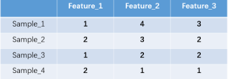
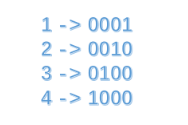
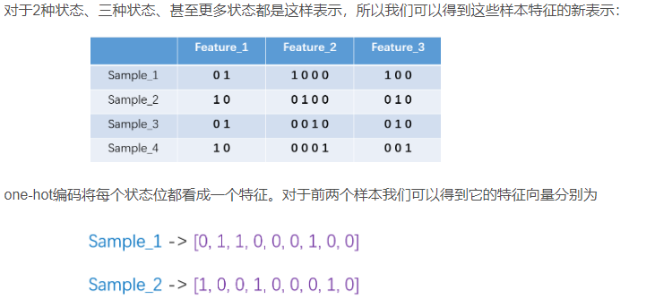
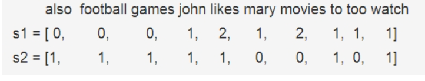
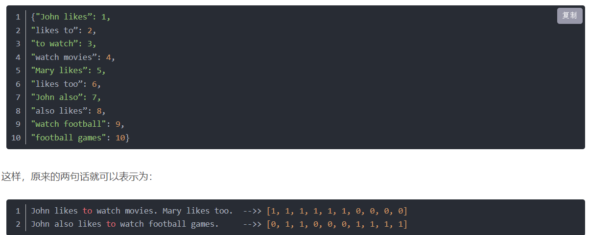
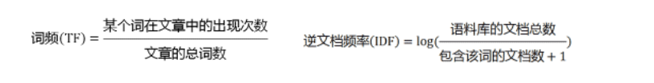

特征抽取：
稀疏矩阵：在矩阵中，若数值为0的元素数目远远多于非0元素数目。
稠密矩阵：在矩阵中，若数值为0的元素数目远远小于非0元素数目。
1.one-hot
1.1 one-hot编码：
使用n位寄存器对N个状态进行编码，每个状态都有它独立的寄存器位，并在任意时候其中只有一位有效。
one-hot编码就是保证每个样本中的单个特征只有1位处于状态1，其他的都是0。
以下是一个简单例子：


转化后：

优点：解决了分类器不好处理离散数据的问题，在一定程度上也起到了扩充特征的作用。
缺点：在文本特征表示上有些缺点就非常突出了。首先，它是一个词袋模型，不考虑词与词之间的顺序（文本中词的顺序信息也是很重要的）；其次，它假设词与词相互独立（在大多数情况下，词与词是相互影响的）；最后，它得到的特征是离散稀疏的。
2.bag-of-words(词袋，计数向量表示)
词袋模型能够把一个句子转化为向量表示，是比较简单直白的方法，它不考虑句子中单词出现的顺序，只考虑词表中单词出现的次数。
例子：
3.Bi-gram和N-gram
与词袋模型原理类似Bi-gram将相邻两个单词编上索引，N-gram将相邻N个单词编上索引。
Bi-gram:
优点：考虑了词的顺序，但是缺点也明显，就是造成了词向量的急剧膨胀。
4.TF-IDF
TF-IDF是信息检索（IR）中最常用的一种文本表示法。算法的思想也很简单，就是统计每个词出现的词频（TF），然后再为其附上一个权值参数（IDF）。


根据公式很容易看出，TF-IDF的值与该词在文章中出现的频率成正比，与该词在整个语料库中出现的频率成反比，因此可以很好的实现提取文章中关键词的目的。
优点：简单快速，结果比较符合实际
缺点：单纯考虑词频，忽略了词与词的位置信息以及词与词之间的相互关系。